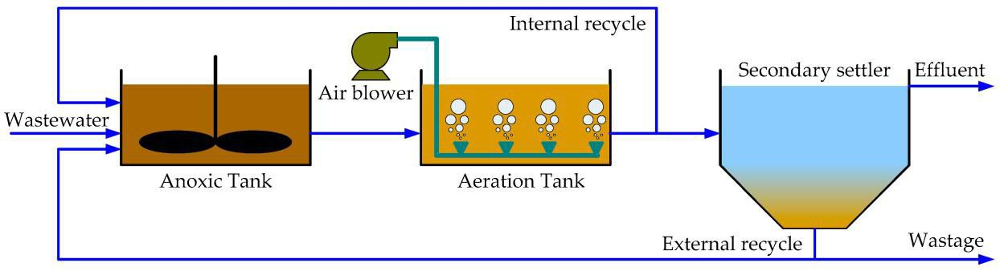
Wastewater treatment is a critical process that removes contaminants from domestic, municipal, and industrial wastewater to protect public health and the environment.
> HDCOP View
At HDCOP for Engineering, we specialize in designing and building advanced wastewater treatment plants tailored to client needs, regulatory requirements, and environmental goals.
Our solutions ensure the safe discharge or reuse of treated water through a combination of physical, chemical, and biological treatment processes.
> Typical Treatment Process Includes:
1. Pre-Treatment
- Screening: Removes large solids like plastics, rags, and debris.
- Grit Removal: Eliminates sand, gravel, and other heavy particles.
- Oil & Grease Removal : Separators or skimmers extract fats and oils from industrial wastewater.
2. Primary Treatment
- Sedimentation (Primary Clarifiers): Suspended solids settle at the bottom of tanks, reducing organic load before biological treatment in large wastewater treatment plant.
3. Secondary (Biological) Treatment
- Activated Sludge Process: Microorganisms break down dissolved and suspended organic matter in aeration tanks.
- Trickling Filters / MBBR / SBR (optional): Alternative biological systems based on project requirements.
- Sedimentation (Secondary Clarifiers): Separate treated water from biological sludge.
4. Tertiary (Advanced) Treatment (if required)
- Filtration: Sand, carbon, or membrane filters to remove fine particles.
- Nutrient Removal: Phosphorus and nitrogen reduction for environmental compliance.
- Disinfection: Chlorination or UV treatment to eliminate pathogens before discharge or reuse.
5. Sludge Treatment
- Thickening: Sludge is concentrated and moisture removed by thickener
- Dewatering: Sludge is concentrated via belt press, Screw press, Plate press or centrifuge.
> Our Focus in wastewater treatment:
We provide end-to-end solutions for treating domestic sewage, ensuring compliance with
environmental regulations and protecting public health.
• Technologies:
- Activated Sludge Process (ASP), Advanced to added Moving Bed Biofilm Reactor (MBBR).
- Sequential Batch Reactor (SBR)
- Membrane Bioreactor (MBR).
- Chemical Process plant
• Key Features:
- Efficient removal of BOD, COD, and nutrients (nitrogen and phosphorus).
• Scope of Supply for Wastewater Treatment
At HDCOP, we provide a complete range of products, services, and solutions to design, build, and
operate wastewater treatment plants.
a. Design and Engineering
b. Equipment and Technologies
- Primary Treatment: Bar screens, grit chambers, and primary clarifiers.
- Secondary Treatment: Activated sludge systems, MBBR, SBR, and MBR.
- Tertiary Treatment: Sand filters, membrane, and disinfection systems (UV, ozone, chlorination).
- Sludge Treatment: Thickeners, digesters, centrifuges, and belt presses.
- Pumps, Blowers, and Mixers: for aeration, mixing, and fluid transfer.
• Type of Wastewater Treatment
a) Activated Sludge Process (ASP)
- How it works: Wastewater is mixed with a culture of microorganisms (activated sludge) in an aeration tank.
The microbes break down organic matter.
- Use: Commonly used in municipal and industrial wastewater treatment.
- Key features: Requires aeration, settling tanks, and sludge recycling.
- Advanced: for area reduction we can use a Moving Bed Biofilm Reactor (MBBR).
• Our Experience
(I-Tevera Station Sina Extended Aeration (2000 m3/day) )
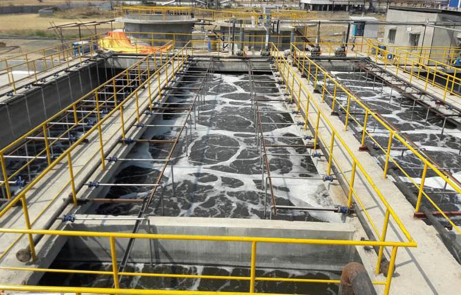
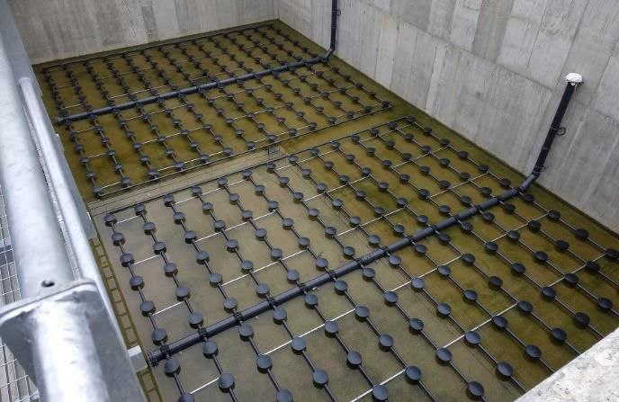
II-Palm Hils Giaza STP-MBBR 4,000 M3/Day
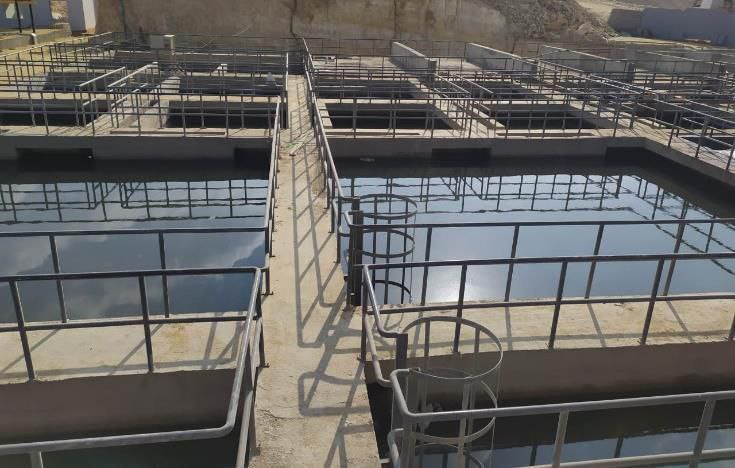
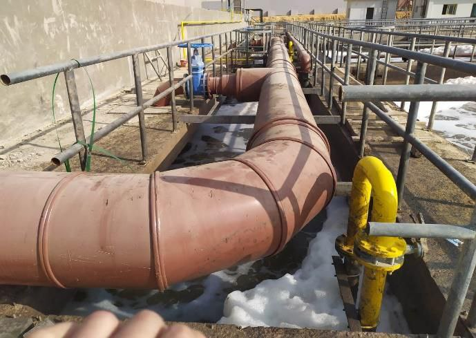
b) Sequential Batch Reactor (SBR)
- How it works: Wastewater is treated in batches in a single tank. The process includes filling, aeration, settling,
and decanting.
- Use: Suitable for small to medium-sized communities or industries.
- Key features: Flexible and compact design.
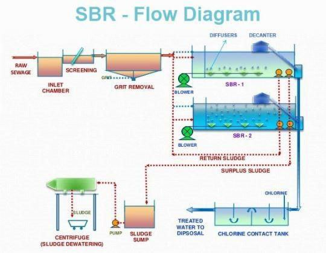
Mnof -SBR Capacity 12000 M3/Day
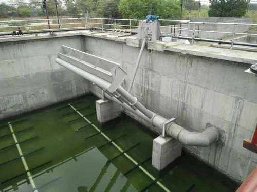
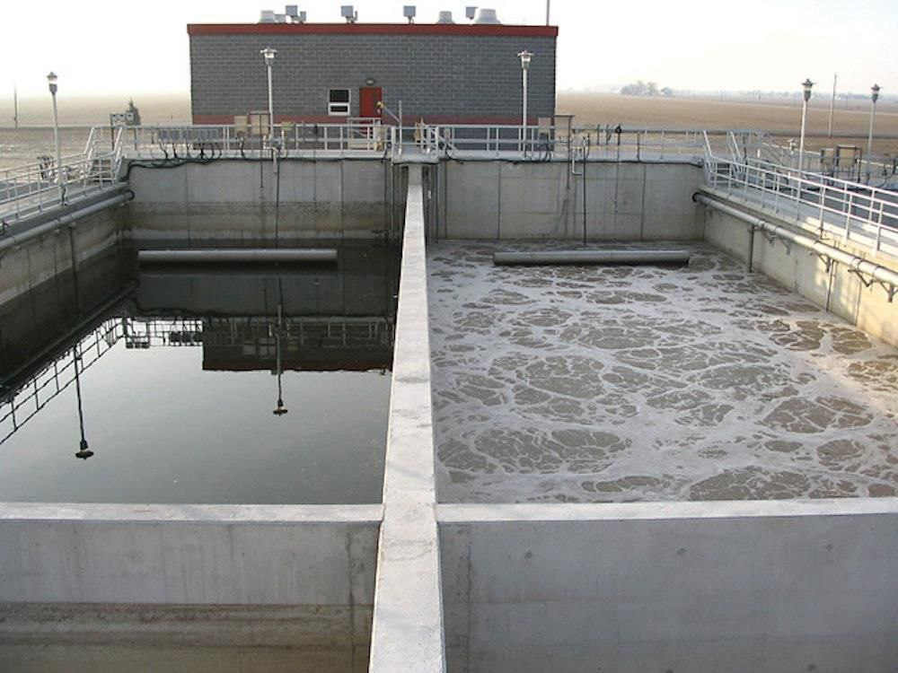
c) Membrane Bioreactor (MBR)
- How it works: Combines biological treatment with membrane filtration to separate treated
water from sludge.
- Use: Ideal for areas with limited space or high-quality effluent requirements.
- Key features: Produces high-quality effluent but has higher operational costs.
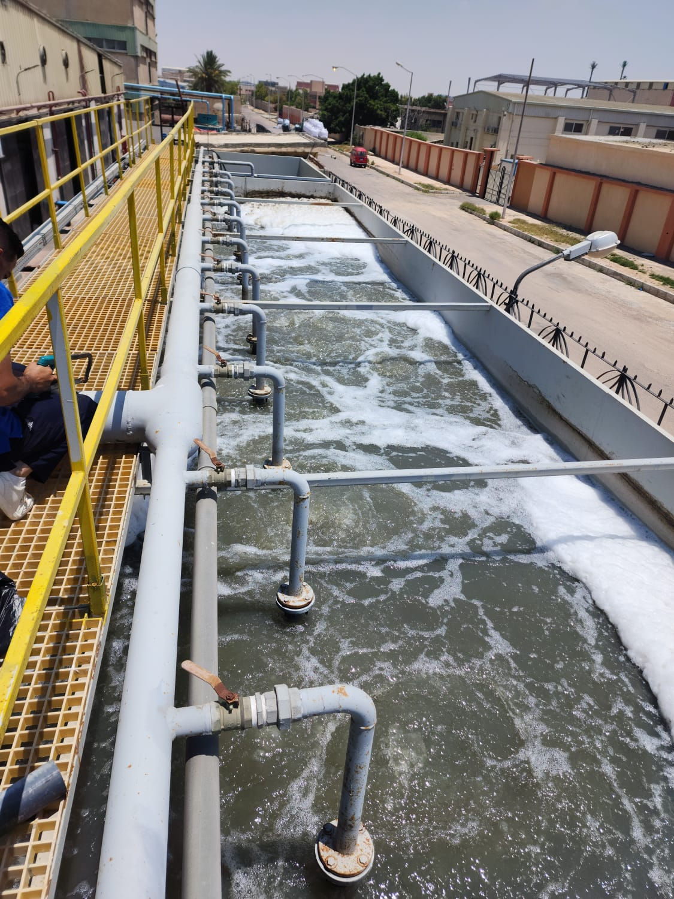
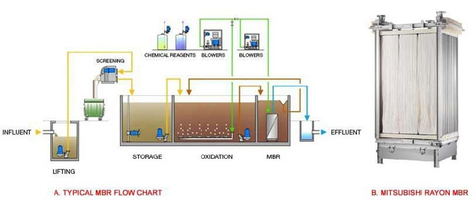
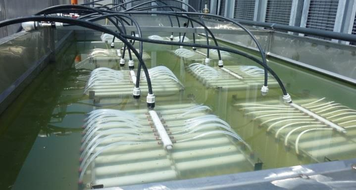
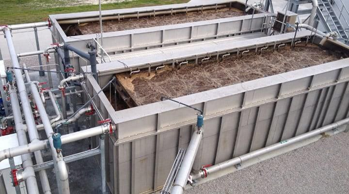
d) Chemical Process
- How it works: Combines Chemical treatment with sedimentation tank to separate treated
water from sludge.
- Use: Ideal for areas with limited space or high-quality effluent requirements.
- Key features: Produces high-quality effluent but has higher operational costs.
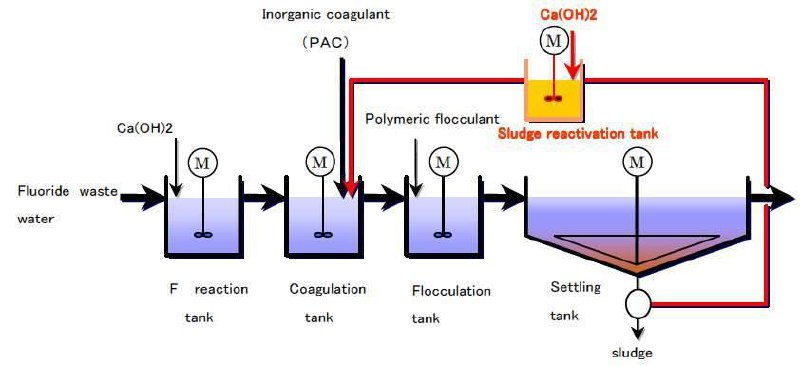
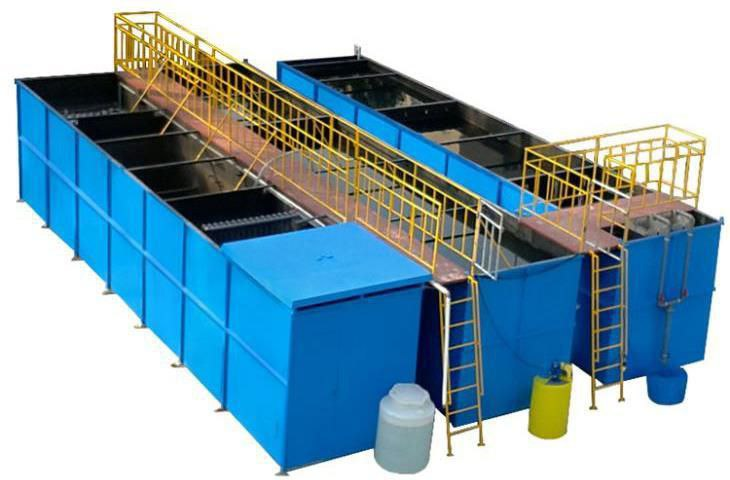
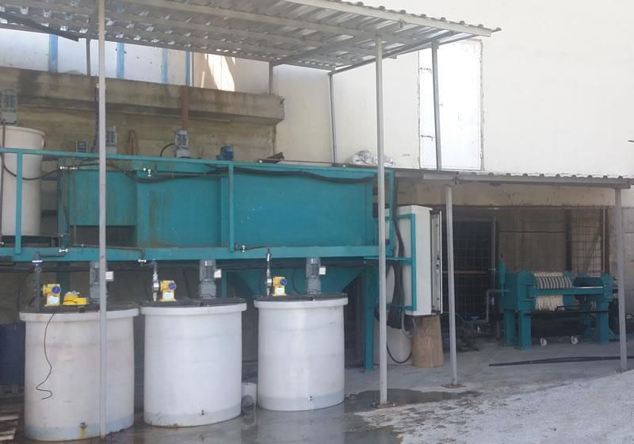
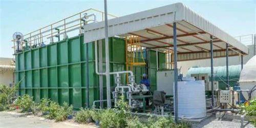